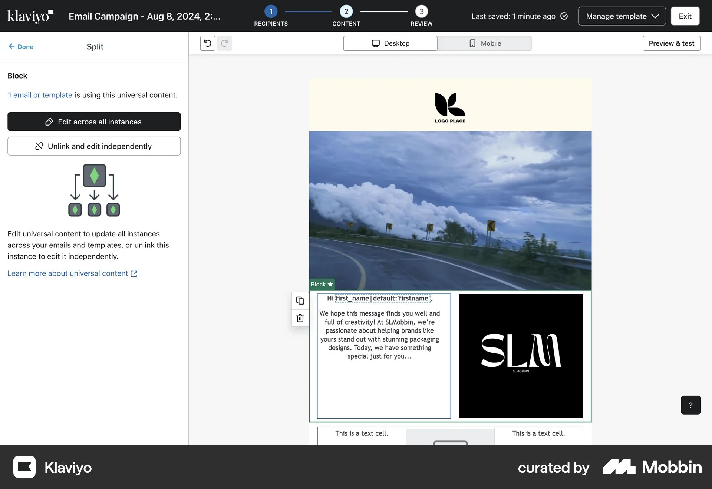
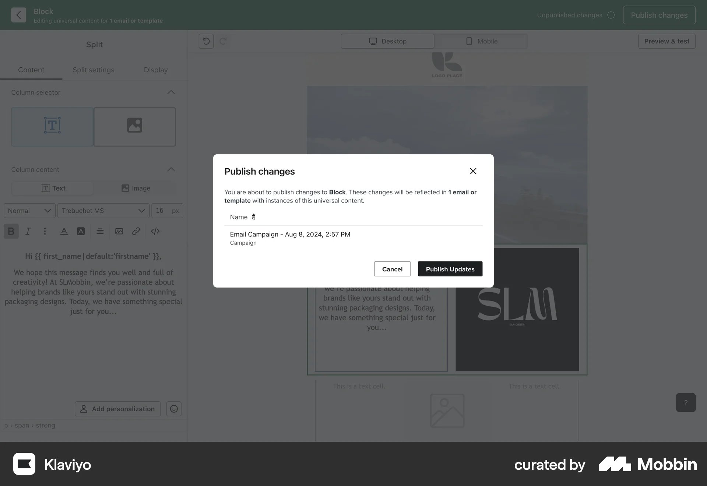

Overview
Who it's for
- Small-to-medium businesses
- Non-technical marketers
- Users who want to "just send an email" without engineering support
Why it matters for us
- "Content Studio" concept aligns with our Library idea
- Property managers' mental model likely shaped by tools like this
- Sets the baseline for simplicity expectations

Our users will expect this level of simplicity as the baseline experience.
Content Block Model
- Drag-and-drop blocks – text, image, button, divider, etc.
- "Saved Content Blocks" feature lets users save any block for reuse
- Saved blocks appear in a dedicated sidebar panel during editing


We need to go beyond this—our blocks must stay linked so edits propagate. But the discovery UI (sidebar with previews) is worth stealing.
Personalization & Rules UI
- "Conditional Merge Tags" for simple show/hide
- Segmentation happens at the audience level, not block level
- No native "show this block only to segment X" toggle in the visual editor
- Advanced users must write merge tag code manually
*|IF:GROUPINGS:GroupName=VIP|*
VIP content here
*|END:IF|*

Mapped to our use cases
Default vs Group PreArrival: Would require separate campaigns or manual merge tags
Club-only content: No clean visual way to do this per-block
Mailchimp's personalization is too code-heavy for property managers. We need a visual alternative.
Content Block Model
- Drag-and-drop blocks similar to Mailchimp
- "Universal Content" blocks = truly linked, reusable content
- When you update a Universal Content block, it updates everywhere it's used
- Universal Content appears in a dedicated library section


Universal Content is the model we should follow. The "Edit across all" vs "Unlink" choice is exactly what we prototyped.
Personalization & Rules UI
- "Show/Hide" toggle on every block in the sidebar
- Rules use a visual query builder: Property + Operator + Value
- Example: "Show if
VIP_Statusequalstrue" - Can stack multiple conditions with AND/OR logic
- Preview lets you test with different profile properties


Mapped to our use cases
Default vs Group PreArrival: Add condition guest_type equals Group to show Group Welcome Letter
Club-only content: Add condition club_eligible equals true AND hotel_has_club equals true
This is almost exactly what we need. The visual condition builder + preview is the pattern.
Content Block Model
- "Modules" (their term for blocks) can be saved to a library
- "Global Modules" are truly linked—edit once, update everywhere
- "Local Modules" are one-off instances
- Clear visual distinction: Global modules have a special icon/badge


The Global vs Local distinction + conversion flow is exactly what we need for "keep shared" vs "create one-off."
Personalization & Rules UI (Smart Content)
How Smart Content works
- Click "Make smart" on any module
- Choose the criteria: Contact list, Lifecycle stage, Country, Device, etc.
- Create variant versions of that module for each segment
- Default version shows for everyone who doesn't match a rule


Mapped to our use cases
Default vs Group PreArrival: Welcome Letter block → Make smart → "Guest Type = Group" variant
Club-only content: Club Detail block → Make smart → "Club Eligible = Yes" (and hide default)
The "tabs for variants" UI is very clear. Users see all versions in one place.
Overview
Who it's for
- Agencies building templates for clients
- Users who want design-system consistency
- Non-technical designers needing brand control
Why it matters for us
- "Saved Rows" = reusable content blocks that sync
- "Content Locking" = control what editors can/can't change
- Model for brand-controlled templates with local flexibility

The "locked vs editable" concept could help property managers understand what they can customize vs what's centrally controlled.
Content Block Model
- "Rows" are the primary unit (can contain multiple content blocks)
- "Saved Rows" are reusable and synced across templates
- "Synced Rows" (newer feature) = true linked content, updates propagate
- Row library has categories, tags, and search


Explicit "Synced" terminology is clearer than HubSpot's "Global." The warning modal is exactly what we need.
Overview
Who it's for
- Enterprise marketers with complex needs
- Teams with developer support for AMPscript
- Organizations already in Salesforce ecosystem
Why it matters for us
- "Content Builder" = enterprise-grade reusable content
- "Dynamic Content" = advanced rule-based variants
- Learn from their power, design for 10% complexity

Content Block Model
- "Content Blocks" live in Content Builder library
- Blocks can be nested, versioned, and organized in folders
- "Reference Content" = linked blocks that sync
- "Copy Content" = independent instances


"Reference vs Copy" choice at insertion is worth considering—makes the decision explicit upfront.
Pattern: Linked Blocks with Usage Visibility
What it is
A reusable content block that syncs across all emails where it's used, with clear visibility into usage count and locations.
Who does it well
Our Library sidebar should show "Shared · 4 emails" and offer a "See where used" link.
Pattern: Visual Show/Hide Conditions per Block
What it is
A visual interface for setting display conditions on individual blocks, without code.
Who does it well
Our block edit panel should have a "Who should see this?" section with checkboxes/dropdowns, not code.
Pattern: Explicit Shared vs Local Choice
What it is
A clear decision point where users choose whether edits affect all instances or just this one.
Who does it well

Our prototype's "Update everywhere" vs "Change only for this email" radio buttons are the right pattern. Add a confirmation warning for global updates.
Pattern: Variant Tabs Within One Block
What it is
Showing all segment-specific versions of a block in a single UI, as tabs or panels.
Who does it well
Consider adding variant tabs inside the block edit panel when multiple audience rules exist.